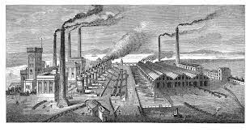
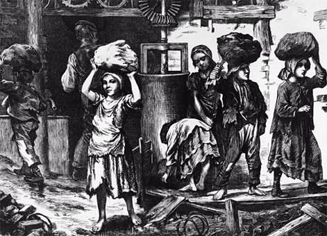
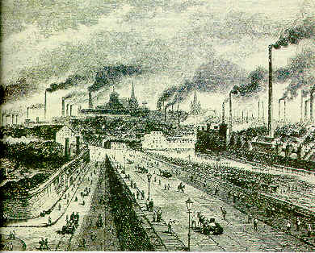

Pagina Principale |
Sviluppo Industriale |
Sviluppi Scientifici e Tecnologici |
|---|
Le conseguenze sociali ed ambientali
|
La nascita delle fabbriche
Con il tempo, le macchine per la produzione industriale divennero sempre più numerose e di dimensioni tali che non potevano più essere ospitate nelle case dei lavoratori. Di conseguenza, furono costruite fabbriche, stabilimenti capaci di contenere grandi macchinari e ospitare migliaia di operai. Sebbene il lavoro a domicilio non scomparisse del tutto, venne gradualmente sostituito dal lavoro in fabbrica, che era più rapido e conveniente. Le prime fabbriche sfruttavano l'energia idraulica e quindi erano posizionate presso fiumi o torrenti. Solo con l'ampia diffusione dell'uso del vapore, la vicinanza a corpi d'acqua non divenne più essenziale, consentendo la produzione di energia ovunque e in ogni stagione. Tuttavia, gli imprenditori preferivano ancora situare le fabbriche vicino ai giacimenti di carbone, il principale combustibile dell'epoca necessario per alimentare le macchine a vapore, abbondanti in Inghilterra. 
Il lavoro di fabbrica è più efficiente
Ogni lavoratore si concentra su un compito specifico, come tagliare il filo o affilare la punta, aumentando notevolmente l'efficienza complessiva della produzione. Questo concetto di divisione del lavorola divisione del lavoro significava che le persone si concentravano su compiti specifici per rendere il lavoro più efficiente, come lavorare in fabbriche o coltivare campi. Aiutava a produrre più cose in meno tempo.,nella fabbricazione, contrapponendosi al metodo artigianale in cui un singolo artigiano produceva manualmente oggetti unici, con il rischio di imperfezioni ma anche con la varietà distintiva. illustrato da Adam Smith, ha portato a una maggiore efficienza nella fabbricazione, contrapponendosi al metodo artigianale in cui un singolo artigiano produceva manualmente oggetti unici, con il rischio di imperfezioni ma anche con la varietà distintiva.  Ma è anche duro e mal pagato
Il lavoro nelle fabbriche, sebbene più efficiente, comportava spesso una dura disciplina. Gli orari erano imposti dalla macchina e dall'orologio, sotto il controllo costante dei sorveglianti, e i lavoratori temevano severe multe. I salari erano bassi, con donne e bambini pagati significativamente meno degli uomini adulti, nonostante affrontassero gli stessi pesanti turni di lavoro. Nelle miniere, dove la richiesta di carbone e metalli era elevata, le condizioni erano ancora più difficili, con lavoro estenuante e frequenti rischi di incidenti come crolli, allagamenti o esplosioni di gas (grisou). 
Le città industriali crescono disordinatamente
Nelle prime fasi della rivoluzione industriale, l'immigrazione dei lavoratori dalle campagne alle città ha causato una crescita disordinata e veloce delle città industriali. Manchester, ad esempio, è passata da 6000 a 930.000 abitanti in poco più di un secolo. Nei quartieri periferici accanto alle fabbriche, sono stati costruiti in fretta alloggi per gli operai, spaziando da baracche a case piccole, malsane e affollate. Le condizioni igieniche erano disastrose, con inquinamento dell'aria, mancanza di acqua potabile e fognature, e strade spesso non selciate coperte di sporcizia. Ciò ha favorito la diffusione di malattie infettive, portando a una elevata mortalità, con una durata media della vita di soli 15 anni per le classi lavoratrici a Liverpool nel 1842. La metà dei bambini nati in città moriva prima dei 5 anni, spesso a causa di malnutrizione e rachitismo, una malattia che provocava gravi malformazioni ossee. 
|